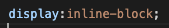

Block Elements
Most elements act as blocks (paragraphs, headings, etc).
This means that when you use these in your html code you they will automatically start a new line.
By default they will take up 100% of the width of their parent container eg the whole page you can change this but they will still act like blocks and the next one will go underneath.
As an example these sentences are all in paragrahs and they will be sitting on top of each other even if there is space for them to be next to each other.
As an example of this here is a image I took from google search.

Blocks are great because they easily seperate content and you can add padding, margins etc to make your page look tidy
Inline elements
Inline element are just that. Elements that are IN the LINE. Things like links to websites do this. Inline elements only take up the width of the content itself. Like this link to the devacademy website
You can't change the amount of space the inline element takes up in the same way you could a block element, where you could add padding, margins etc. If you do this to an inline element it won't work the same.
Another image from a google search of 'inline elements'

Inline Block - The best of both words.
Inline block seems like a very handy option. You can make elements act inline but have the benefits of blocks. You can style each block how you would like to and have it sitting next to each other like the diagram below.

How to use inline-block
To apply the inline-block display to an element you simply need to add this to your CSS code for the element as shown below.
And so to summarise all this.
- Block elements stack on top of each other and you can influence the space they take up wiht padding etc.
- Inline elements are in the line of content and it isn't very easy to change the space they take up.
- Using the inline block display allows you to move elements to be inline but still be able to treat them like block elements.
Back to homepage